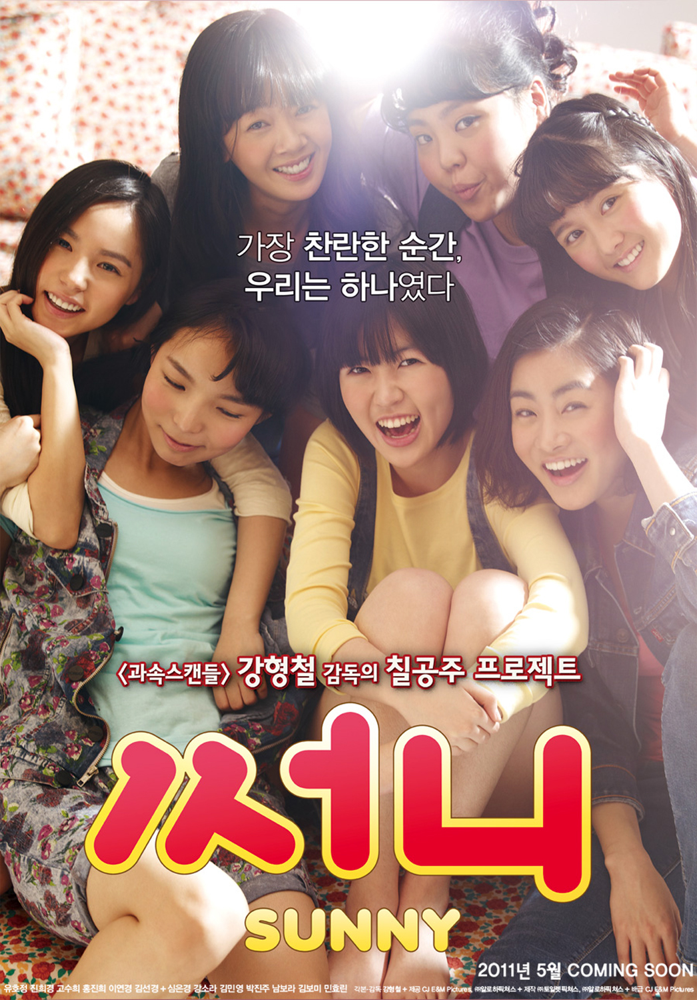

阳光姐妹淘（써니，2011）
一句话短评：
内容简介：
- 25年前，高中生任娜美（沈恩京 饰）一家从全罗道搬到汉城，娜美入读真德女子高中，因方言浓重怯于开口的娜美幸运的得到了同班大姐头夏春花（姜索拉 饰）的维护，并与围绕在夏春花周围的执着于双眼皮的金玫瑰、满嘴脏话的黄珍熙、梦想成为作家的徐金玉、要成为韩国小姐的俞福姬以及沉默傲慢的美人郑秀智等五人结识。在一次和不良少女团对决之后，春花和娜美等七人组成了“Sunny”团体……
- 多年以后，家庭主妇娜美在去医院探望母亲时偶然重逢了身患绝症住院的春花，后者希望在生命的最后两个月内，能够再见当年的Sunny成员。娜美找到金玫瑰，两人委托私家侦探寻找当年的同伴，而那些关于青春的回忆，也在一个个熟悉的名姓后面再次被唤醒。
短评：
- 一起哭，一起笑，一起疯，一起闹，一起尽情折腾我们的人生，即使老去也有最美最好的青春可以一起祭奠。 ——狷介有乌青
可播放资源：